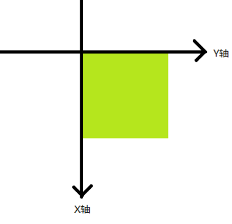
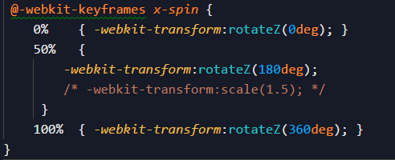
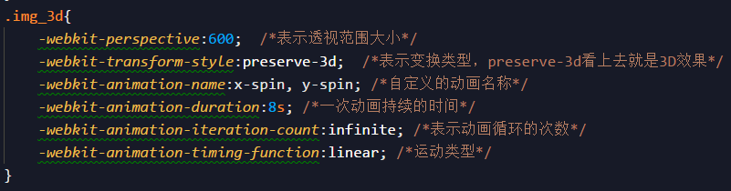
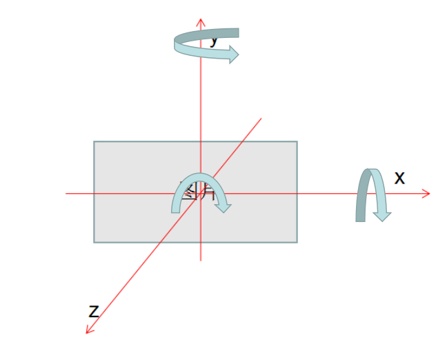
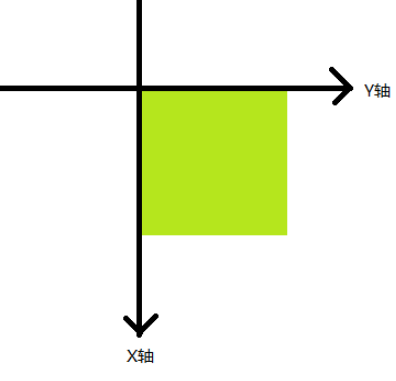
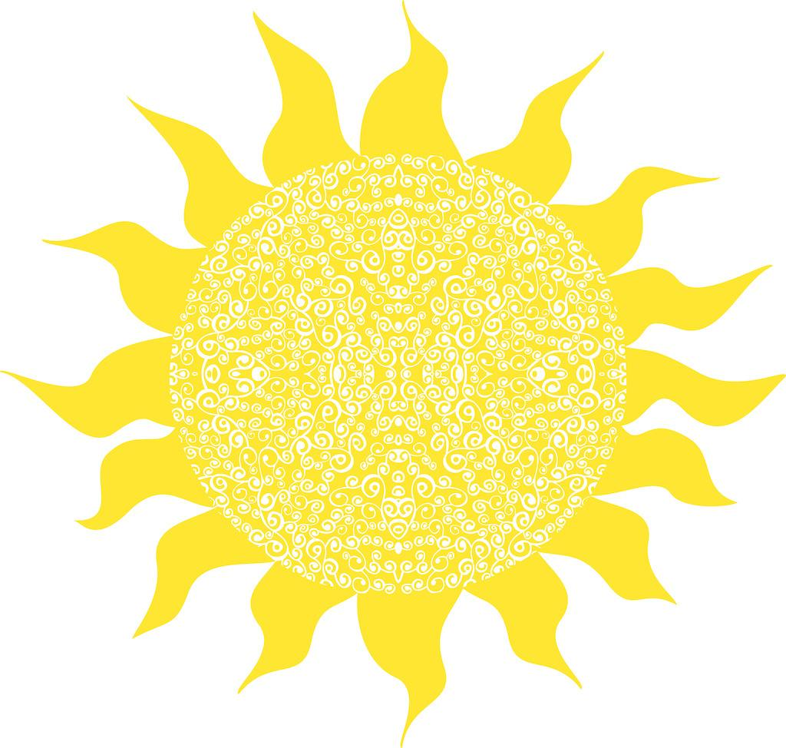

CSS3 animate
偶然看到个动画效果觉得眼前一亮，却想不出如何实现，所以翻阅了一下(浏览器右键查看源代码)
发现竟然是Css3 animate在搞事，所以兴趣来了，就仔细研究一下这个属性
当然我不是大神水平，抱着的是学徒心态，所以自己摸索和学习的东西当然不可能全对
旨在自我学习和总结，和大家分享，不对之处望批评见谅
发现竟然是Css3 animate在搞事，所以兴趣来了，就仔细研究一下这个属性
当然我不是大神水平，抱着的是学徒心态，所以自己摸索和学习的东西当然不可能全对
旨在自我学习和总结，和大家分享，不对之处望批评见谅
分两个地方，1先来看看属性的定义，先定义在使用
translate: 相对于原来的位置进行位置变化，可以为负值

rotate: 保持原有位置不变，但是本身顺时针旋转，不过并不撑开父元素，为父元素保持未动画之前的大小
scale:缩放，在元素本身位置不变的情况下，对元素横向和纵向的尺寸进行调整
skew:倾斜,比较特殊

translate3d(12px, 50%, 3em);
translateZ(2px);
scale3d(2.5, 1.2, 0.3);
scaleZ(0.3);
rotate3d(1, 2.0, 3.0, 10deg);

总的来说这个属性是CSS3的动画属性，所以还是不支持低端浏览器，适用于：IE10+，Firefox5+，chrome或Safari4+浏览器。
先看这个定义@-webkit-keyframes x-spin，就是定义了一个叫做x-spin的动画名字.
下面有三条效果，你可以看作帧，也就是某时刻的变化。
0%,也就是一开始的时候， 50%就是定义动画时长的一半(时长不在这里定义), 100%就是动画时长的总结
-webkit-transform:rotateZ();这个就是旋转的意思，旋转等会再说。
除了旋转当然还有其他的动画比如缩放和移位。
总之，知道怎么定义就行了
先看这个定义@-webkit-keyframes x-spin，就是定义了一个叫做x-spin的动画名字.
下面有三条效果，你可以看作帧，也就是某时刻的变化。
0%,也就是一开始的时候， 50%就是定义动画时长的一半(时长不在这里定义), 100%就是动画时长的总结
-webkit-transform:rotateZ();这个就是旋转的意思，旋转等会再说。
除了旋转当然还有其他的动画比如缩放和移位。
总之，知道怎么定义就行了
定义完就是如何使用了

在你要使用的元素的样式下面，写下这些使用动画的相关属性
表示透视范围大小，我暂时还不明白，以后补充吧
把把刚刚定义的x-spin动画填在动画名字上面，不过这个属性貌似只能填一个动画名字，还有就是运动类型
运动类型和transition属性类似，ease ease-in ease-out等等
不过他们的内在原理都是贝塞尔曲线，这个曲线真牛逼，景仰景仰
这里用的是线性类型，就是二维坐标轴的一条直线，最简单的了
表示透视范围大小，我暂时还不明白，以后补充吧
把把刚刚定义的x-spin动画填在动画名字上面，不过这个属性貌似只能填一个动画名字，还有就是运动类型
运动类型和transition属性类似，ease ease-in ease-out等等
不过他们的内在原理都是贝塞尔曲线，这个曲线真牛逼，景仰景仰
这里用的是线性类型，就是二维坐标轴的一条直线，最简单的了
动画规则
这里我摸索了一下旋转的规则，主要是旋转方向这块

对于rotateX,rotateY,rotateZ的旋转规则如上图
在动画的世界里，有三个坐标轴，x,y,z不过跟数学上的不同，y和z轴调换了过来
图上标注的旋转方向都是正角度的方向
在动画的世界里，有三个坐标轴，x,y,z不过跟数学上的不同，y和z轴调换了过来
图上标注的旋转方向都是正角度的方向
一些例子
自己趁着看看其他动画规则和效果如何
translate: 相对于原来的位置进行位置变化，可以为负值
不过并不撑开父元素，为父元素保持未动画之前的大小
translateX, translateY如其名是横向和纵向的位置改变
rotate: 保持原有位置不变，但是本身顺时针旋转，不过并不撑开父元素，为父元素保持未动画之前的大小
可以负角度
scale:缩放，在元素本身位置不变的情况下，对元素横向和纵向的尺寸进行调整
调整规则: 只有一个值则元素所有尺寸乘于缩放值,两个值则按照横向尺寸乘第一个值
纵向尺寸乘于第二个值,单方便调整可以选：scaleX( ) scaleY( )
skew:倾斜,比较特殊
先保持原本元素大小位置不变，单个值时，把X轴逆时针旋转角度
如果有两个值，那么第二个值，就是Y周顺时针旋转的角度

translate3d(12px, 50%, 3em);
这个属性也是让我迷惑的
translateZ(2px);
Z轴是面向我们人的一个轴，可以说是控制跟我们人的距离，但是我们看不出他接近没有
scale3d(2.5, 1.2, 0.3);
这个属性也是第三这个值不为0的话都没有啥可见的效果
scaleZ(0.3);
根据scale讲的坐标的话这个属性如其名按Z轴缩放
发现这个属性只要不为0都没有效果
rotate3d(1, 2.0, 3.0, 10deg);
这个属性很强大啊感觉，可以模拟skew的效果
应用
旋转太阳
进度条
个人总结
CSS3动画真是多，有的浅显易懂有的奥妙颇深
不过碍于浏览器兼容问题，很多浏览器无法一见真身
上面只是列出了一些常见的动画，有些我还处于迷惑之中
有个印象上的概念就暂且，等以后再针对那些疑惑的家伙来搞搞吧
不过碍于浏览器兼容问题，很多浏览器无法一见真身
上面只是列出了一些常见的动画，有些我还处于迷惑之中
有个印象上的概念就暂且，等以后再针对那些疑惑的家伙来搞搞吧